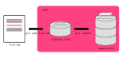

Simon Schug
26 April 2019
Version Control System for tracking changes in files.
Overcome
document_2019_final_FINAL!!.docx
Stop sending code per mail to collaborators
Please find attached code_v3.zip
You are probably already done 😎️.
git# e.g. under Ubuntu / Debian
sudo apt install gitYou have 2 options:
Windows Subsystem for Linux (only Windows 10)
Use the standalone *.exe installer
You have 2 options:
Use brew (preferred 👍️)
brew install git into the terminalgitUse the *.dmg installer
gitGit is primarily used in the command line (Bash). To get started, here are some useful commands:
pwd to print the working directorycd [folder] to change the working directoryls to list files/foldersmkdir to make a new directorynano [filename] as a simple text editorSince this is our first time with git, we tell it who we are 🙋️:
git config --global user.name "Your Name"
git config --global user.email "youremail@email.com"which text editor ✍️ we prefer:
git config --global core.editor "nano"and check ☑️ if everything is set up properly:
git config --listCreating a local git repository is easy 👯️:
cdgit init to initialize the repositorygit statusWhere does git store its information?
Which files & folders will it track?
 Commits with small changes are easier to read & review 💡️
Let’s go through the modify-add-commit cycle 🌀️:
git add filenamegit commit -m "Meaningful commit message"Use
git statusto monitor the current status of your repository.
Files you don’t want to track can be ignored 😑️.
files, folders/ or whole patterns *.dat!final.datHow can we look at all the tracked changes? 👁️
git log to look at the repository’s historygit diffThe most recent commit is referred to by the identifier
HEAD. What doesgit diff HEAD~2do?
TODO branches!
TODO: Exploring history done? Oops I made some bad choices, how can I go back in time? 🕓️
git checkout [commit-id] [filename]git checkout -b [new-branch] [commit-id]git checkout [commit-id]. It will make you loose your HEADWhat is the detached HEAD state & how can you avoid it?
git init // Initialize local git repository
git status // Check status of working tree
git add [filename] // Add file(s) to staging area
git commit -m "message" // Commit changes to repository
git log // Show commit logs
git diff // Show changes between commitsGet a more elaborate git cheatsheet from GitHub Help.
Open scientific work is more useful and more highly cited than closed. - How to handle citations